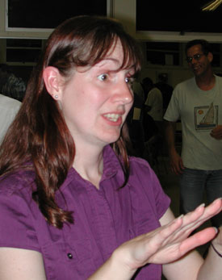
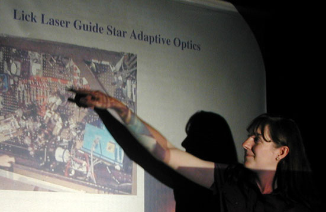

|  |  |
I have tapes from the TV series "Around The Galaxy" available. There are 8 different tapes, covering the 37 episodes. Tapes are now available for checkout at the monthy general meeting and will be due the next meeting. Three people have checked out tapes so far. I believe the tapes will be a great resource for people of any experience, and will be a real kick-start for anyone starting out. E-mail me at rtzeglin@netzero.net for a list of subjects.
After publishing Ernie Piini's eclipse article last month, we learned that Shiloh Unruh is not in fact a Ph.D. astronomer, and was never a member of the astronomy research staff at Lick Observatory.